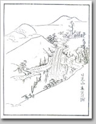

はじめに
芭蕉が門人の河合曽良を従えて「奥の細道」へと旅立ったのは、元禄二年三月二十七日、陽暦でいえば一六八九年五月十六日のことである。このとき芭蕉四十六歳、曽良四十一歳。
ふたりは江戸から北上し、日光に立ちより、白河の関を抜けて仙台・松島へ。それから奥州藤原氏の拠点だった平泉まで足をのばし、最上川を下って酒田へ、象潟を一見して日本海の浜辺を延々と歩き、越後、越中、加賀、越前、近江琵琶湖東岸を通って美濃大垣に至っている。岩波文庫の注に「芭蕉は八月二十一日以前に到着（荊口句帳）」とあり、芭蕉は八月の下旬には大垣に到着していたらしい。二十一日到着とすると百四十三日間の旅であった。
では百四十三日間でふたりはいったい何里歩いたのだろう。
『奥の細道』には「前途三千里のおもひ胸にふさがりて」とあるが、これは遠距離を喩える慣用句で信用するに足りない。曽良は丹念に毎日歩いた距離を記帳していたが、後半になるとそれも記入されなくなってくる。現在の道路と芭蕉当時の街道が重なっていればすぐに計算できるのだが、そうとは限らないし、また現在ある川が昔はなかったというところも多い。だからこれまでの多くの研究書は「およそ六百里」とあいまいな言い方をしている。
しかし『奥の細道』の全行程を計算する方法がまったくないわけではない。ある藩ではきちんと里程を調べていたし、途切れ途切れながらではあるがのちの旅人が同じ道をたどり、その距離を記していることがあるからだ。曽良が書かなかった距離はこうした街道細見や紀行文などで補って計算することができる。ここに取り上げた紀行文は、元禄時代に書かれた『壬申紀行』『申戌旅日記』『江戸から金沢までの道の記』（いずれも江戸と金沢間の記録であるが、ここでは越後高田以西、越中、加賀金沢までを取り上げた）以外は江戸時代後期に著されたものがほとんどで、厳密にいえば芭蕉当時そのままというわけではない。だが道というものがすっかり変わってしまうのは明治になって車輌が通るようになってからのことで、江戸中期と後期ではそれほどの差はないと考えていいだろう。こうしたもので補っていくと、『奥の細道』の全行程は四百二十四里（約一六六五キロ。滞在して見物した距離と、羽黒三山を除く）になる。
では、芭蕉は一日に何里を歩いていたのだろうか。芭蕉の行動がはっきりしているのは曽良と一緒だった八月五日までなのだが、それまでに実際に歩いていた日は五十二日間、知人宅や旅籠に逗留していたのが六十六日間であった。八月五日までの歩行距離はおよそ三百八十二里（一五〇〇キロ）。一日の平均七・三里（約二九キロ）を歩いていたことになる。曽良と別れてからの山中温泉・小松・敦賀・大垣の距離は五十三里余、一日七・三里歩いたとして七日かかり、実際に歩いたのは全行程のうち五十九日間ほどであったと思われる。前年の元禄元年に美濃から信濃の姨捨へと向かったとき、山坂の多い六十里を四泊五日、一日十二里を歩いていたから、ずいぶんとゆっくりした旅である。ちなみに当時の東海道では成人男子の一日の歩行距離十里（約四〇キロ）といわれていた。
一日七・三里というとのんびりとした旅に見えるが、この当時の奥州白河以北の宿駅は東海道とは違って、まだ十分に整備されていなかった。そのことを考慮に入れると、歩行距離は短くても楽な旅ではなかったはずである。地図はもちろん、宿場から宿場の距離や旅籠の所在や宿代などを記した旅行案内書もないから、みちのくの情報はなきに等しい。道路事情や、どこに茶店があるか、諸藩の番所の取り締まりはゆるいのかきびしいのか、近くまで行って聞くしか方法がなかった。お国訛りが強い土地では、言葉で意志を十分に伝えられるかどうかも不安であったろう。小さな宿場では旅籠といっても農家が兼業していたから、貧しい日常と隣り合わせの宿泊だったし、雨が降れば道は泥沼と化すところも多かった。
この当時の東北で、宿駅が整備されて旅人が安心して歩くことができたのは、おそらく日光まで、かなり割り引いて考えても福島県入口の白河までだったはずである。白河以北は、旅人どころか住人さえ少なかった。芭蕉が旅立った七十年後の数字であるが、武士を除いた一平方キロあたりの人口密度は、京都・大坂四百人以上、東海道周辺は百人から二百人、江戸は三百人から四百人といわれていた。同じとき、陸奥・出羽は、飛騨・土佐・日向とともに五十人未満しかなかった（『山川日本史総合図録』による）。これは武家人口を除いた数字であるから、武家が集中していた江戸から行くと、人口差は格段に拡いているように感じられたことだろう。
東国は過疎辺境の土地であった。東海道ではすでに武士・商人が日常的に行き来し、伊勢参りを名目に上方見物をする庶民の観光客の姿さえ少なくなかったが、奥羽道や北陸道を往来する者は、藩命を受けた武士や商人くらいなものであった。出羽三山が信仰を集めていたといっても、江戸あたりから参詣する者はまだ少なく、まして風雅を求めて旅する人はほとんどいなかったのである。
こうした土地へ、芭蕉はなぜ行こうとしたのだろう。
芭蕉が出発した元禄二年は、奇しくも西行の五百年忌にあたっている。西行に深く傾倒していた芭蕉は、西行の足取りを追って奥羽へ赴いて歌枕を実見し、その歌心を追体験しようとしたともいわれている。だが五百年忌は単にきっかけに過ぎず、異郷そのものに自分を投げ出したかったのかもしれない。
芭蕉は「奥の細道」の旅に先だって、旅立ちの悲愴な決意を語っている。

弥生に至り、待侘候塩釜の桜、松島の朧月、あさかのぬまのかつみふくころより北の国にめぐり、秋の初、冬までには、みの・おはりへ出候。（中略）去年たびより魚類肴味口に払捨、一鉢境界、乞食の身こそたうとけれとうたひに侘し貴僧の跡もなつかしく、猶ことしのたびはやつし／＼てこもかぶるべき心がけにて御坐候。（元禄二年正月・猿雖宛書簡）
この書簡によると、塩釜の桜と松島の朧月、それに浅香沼のかつみが花咲く時期にあわせて北国を旅し、秋の初めか冬までには美濃・尾張に到着という予定であった。前年の『更科紀行』の旅から戻ってからは、名利を嫌った平安中期の反俗の聖・増賀にならって粗食で過ごし、これからの旅では托鉢の乞食僧に甘んじる覚悟だとも記している。東海道を旅するならば決して書かなかった言葉である。このような沈痛な決意をしてまで東国にこだわった理由があったはずである。
芭蕉が敬愛した西行は次のような歌を作っている。

都にて月をあはれと思ひしは数にもあらぬすさびなりけり
都で月をおもむき深いものだと思って見ていたのは、とるに足らない慰みごとでしかなかった。都から遠く離れて月を眺めみると、初めてしみじみと心にしみてくる思いがする。
芭蕉はこうした歌に感応したのかもしれない。辺境だからこそ行く価値がある。この頃の芭蕉はすでに門人の数も多く、その門人たちに四十代半ばにして翁と呼ばれるほど崇敬されていた。宗匠然として日常の中にいたのでは物事の上っ面しか見えない。自らを辺境の寂しさ、厳しさの中に置けば、自ずとものを見る目も感じ方も違ってくるはずだ。旅には驚きと発見がある。その中で自らの感覚を追いつめていけば、新しい句境に至るかもしれない、と。
結果をいえば『奥の細道』の旅によって「不易流行」論の着想を得ることになるのだが、芭蕉はまだこの旅がどうなるか、不安が先だつばかりで、どんな収穫をものできるか想像さえもできなかったはずである。
とは言うものの、芭蕉はこの時までに数回の長期の旅をすでに体験していた。二十九歳の春に故郷伊賀からはじめて東海道を下って江戸にやってきたのを皮切りに、三十九歳で芭蕉庵が類焼、甲斐の初狩に仮の宿りを求めて甲州道中を往復した旅、四十一歳の八月中旬、門人苗村千里とともに江戸から伊勢・故郷伊賀、美濃大垣・熱田・名古屋、翌年木曽・甲斐を経て江戸に戻った『野ざらし紀行』（別名『甲子吟行』）の旅、四十四歳の八月、曽良と宗波を伴って常陸鹿島に月を見に行った『鹿島詣』の旅（『鹿島紀行』とも）、同じ年の十月末に江戸を出立、東海道を上って鳴海・名古屋などを経て伊賀へ、翌年伊勢・高野山・和歌浦、奈良、大坂・明石・京都へ出た『笈の小文』の旅、尾張から信濃国更科に出て月見をし、善光寺を参詣したのち、碓氷峠を越えて江戸に帰った『更科紀行』の旅などである。芭蕉はすでに旅の達人であったといえよう。
これらの不安の少ない旅の日においても、芭蕉が一番気にしたのが宿とわらじのことだった。「只一日のねがひ二つのみ。こよひ能宿からん、草鞋のわが足によろしきを求めんむ」（『笈の小文』）とあるように、ゆっくりと体を休めることのできる清潔な宿に泊まること、求めたわらじが足にぴったりで丈夫なものであってほしいこと、この二つが何にもまして切実な問題だった。東海道では一つの宿場に旅籠は何軒も建っていたし、わらじを選ばなければならないような険しいところは小夜の中山と箱根峠があるだけだったが、それでも寝場所と足ごしらえは心配の種だったのである。東海道を歩くのでさえこうであった。
芭蕉の弟子は江戸や故郷伊賀をはじめ、大垣・熱田・名古屋・大津などにいて、熱狂的な心酔者が多かった。こうした地方と違って、東北にはまだ芭蕉の名はそれほど知られていない。しかしながら東北・北陸にも何人かの既知がいるにはいた。江戸に商いに来たおりに芭蕉に入門した人、手紙で教えを乞うていた人たちがそれであるが、彼ら同士をつなぐ距離はあまりに遠く、突然訪ねていっても会えるとは限らない。不安はいや増しに増したことだろう。
芭蕉が出発にあたって、「若生て帰らばと定なき頼の末をかけ」（もし生きて帰れたら幸いと、あてにもならない頼みに少しばかりの望みをかけ）と綴った『奥の細道』の言葉は決して誇張ではなく、当時の人の旅立ちの心情そのままであった。水盃を交わしての出発。命を落とすことが起こっても不思議ではない、それが当時の東国への旅立ちの心構えだったのである。
様ざまの心配があったにもかかわらず、芭蕉は一回も野宿することなく、夜盗に襲われることもなく、無事に旅を終えて予定通りに美濃大垣に着いている。不案内な土地を旅しながら、百四十三日間どんな日々を送っていたのか、その具体的なことは芭蕉の文章からは伺い知ることはできない。『奥の細道』が文学性を重んじたゆえに事実の順序が逆になっていたり、フィクションが混じっていることは広く知られているし、そのうえ計算し尽くした構成と名文に、日常はほとんど払拭されていているからだ。
だが先にも言ったように、随行した曽良が丹念なメモを残していた。毎日の天候と出立時間、出会った人びとの名前、時には歩行距離を丹念に書き付けていて、実に几帳面であった。この「曽良旅日記」によって、はじめて『奥の細道』の足取りが明確となり、全行程のうち半分近くが各地の有力者宅での滞在だとわかったのだが、これも結局は備忘録だから旅の全体像をイメージさせるものにはなっていない。
彼らも疲れたり、腹がすいたり、怒ったり、宿を乞うときに人の機嫌を伺ったりする具体的な旅人だったことに変わりない。芭蕉には気むずかしいところもあったようで、初期からの門人の其角や嵐雪でさえ「俳情の外は翁をはづして逃など致し候よし、殊の外気がつまり、おもしろからぬ故也と」（「老のたのしみ」）と、芭蕉のそばにいると気づまりになり、俳諧以外ではなるべく遠ざかるようにしていたらしい。こうした堅苦しい人物と一緒に旅を続けたのだから、温厚な曽良でさえ窮屈に思ったり、腹だたしく感じたりしたこともあっただろう。
芭蕉は「日々旅にして、旅を栖とす」（『奥の細道』）と書いている。旅を日常とし、移動しながら暮らすということは、様ざまに気をつかわなければ一歩も進まないところがあった。風雅の旅は基本的に何も生み出さない旅である。いくら俳諧に命を賭けていても、それは他人にはあずかり知らないことであった。具体的な何ものも生産することなく、ただふらふら歩いているだけの能なし、そう見られても仕方ないところがある。労働の日常にそうした者がまぎれ込んだとき、拒否反応を起こす人もいただろう。他所から入り込んだ人物には警戒の眼をむけるのは、全国どこでも共通していたことである。
元禄期というと、辺境というイメージが濃かった奥州でもすでに町方の商人仲間で俳諧による結びつきが重要視されていた時代である。多くの俳諧愛好者は貞門や談林派の傘下にあり、俳諧を言葉遊びを楽しむ知的ゲームであると心得て、親睦を深めていた。「俳」はおどけ・滑稽の意味、「諧」もうち解ける・戯れるの意味である。俳諧とは元来そういう軽い遊びなのである。
そこに芭蕉が登場してくる。芭蕉は五音と七音のつながりの中に透徹した人生観を詠み、芸術として高めようとした。それは俗なることで和歌の世界から離れて自由を得ていた俳諧を、再び高雅という知識の鎖につなぐことだと感じた俳人も多かったことだろう。芭蕉のまじめでストイックな句風は、社交俳諧に興じていた俳人たちにとっては、七面倒で陰気くさいもの、社交の場をしらけさせるものだった。もっと言えば、それはもはや俳諧とは言い難い異端であると思った俳人も多かったに違いない。
だがこうした中にも、芭蕉の句風に心動かされた人びとも少なくなかった。江戸と取引のあるほどの地方商人ならば、新しい句風を掲げた芭蕉の名前は、ある種の尊敬と憧れで記憶されていた。はるばると東国にやってきた芭蕉を自宅に何日も滞在させて句会を開き、世話をしたのはこうした人びとであった。
だが俳諧はまだ武士・大商人・富農クラスの人びとのものでしかなく、一般庶民にまで浸透するのは江戸後期を待たなければならない。だから俳諧に興味を持っている者の家に行き着くまでは、芭蕉といえども一介の旅人、時には乞食僧の扱いを受けなければならなかったのである。つまり芭蕉が歩いた百四十三日のうち、知人宅で滞在できた日はもてなしを受けることができたが、その他の日は名もない普通の旅人として過ごさねばならなかったのである。
口に合うとは言い難い食事に苦労し、繕いものや洗濯など、下にも置かぬ俳人宅に世話になっているときなら何でもないことも、次々と宿が変わる旅の空ではままならないことが多かったはずだ。日々の出費は馬鹿にならない。草鞋は履き捨てだから（雨や泥道では一日ももたない）そのつど買わなくてはならないし、渡し舟で川を越えようとすれば舟賃がいる。生水は飲めないから茶店の茶を飲むことになる。その茶代を置かなければならないし、神社に参拝すれば賽銭も必要である。それに毎日の昼食代。長途の旅ではちり紙などの消耗品を買い足す必要もあった。だがこの当時の奥州で貨幣が機能していたのは街道筋の町場だけで、一歩街道を外れれば銭はそれほど役に立つものではなかったはずである。東北に貨幣が浸透するのは、もっとのちになってからのことである。
芭蕉ははたしてどのくらいの金銭を用意して行ったのか、荷物には何が入っていたのか、道の両側にはどんな風景が広がっていたのか、泊まった旅籠はどんな様子だったか、番所では何事もなく通ることができたか。こうした具体的なことを調べるためには、当時の物価や、風俗・街道に関する資料が欠かせないのだが、それが今に残っているところはほとんどなく、『奥の細道』の実際の旅がどうであったかはいまだに解明されていない。
正確にはわからないと断ったうえで、『奥の細道』の旅の毎日を追体験してみようと思う。材料は芭蕉以後に奥羽、北陸道を旅した人びとの数々の記録である。こうした芭蕉以後の旅人は、芭蕉と同じ道をたどっていることが多く、彼らの足取りを重ねあわせれば、奥州道中・北陸道・北国路を結ぶ芭蕉の足取りは網羅できる。ただ残念なのは、『奥の細道』にすぐ続くものが少なく、丹念に記録したものは百年ほど待たなければならないことである。この空白こそがそれまでの東国への旅の困難さをも語っているといえよう。
時代が百年下っても風景は出羽象潟と越後名立以外は大幅には変わらなかったし、神社仏閣もだいたいはそのままだ。人が一日に歩ける距離にそれほどの変化があるわけではない。降り続く雨に歩く気がなえたり、反対に旱天の空を恨めしく仰いだこともほどんどの旅人が味わっている。
だが変わってしまったこともまた多い。第一に貨幣が浸透して、多くのことが銭で解決がつくようになった。旅人が増えたことによって宿場も一変し、素朴ではあるが女たちに遊興的なもてなしをさせる旅籠もあらわれているし、芭蕉が渡ったはずの川も治水工事によって水路が変わっていたり、新田開発のためにそれまでなかった川が出現したりしている。遠浅の海岸には塩田が広がり、それは江戸時代の旅人にとってあたり前すぎるほどの風景だった。東海道などに比べればいまだに辺境ではあったが、江戸時代後期の旅人びとに命を賭ける悲愴感はほとんどない。それだけ東国への道中は変化しているが、自分の足だけが頼りだったことには変わりはない。
曽良は番所があったことを記しているが、それをどうやって通ったかは書いていない。番所がいかにめんどうなものであったか、のちの多くの旅人が不平まじりに書き留めている。芭蕉が一日歩き詰めだったはずもないのだが、茶店に休んだことも記していない。だが他の旅人は茶店に名物があるとその代金まで丹念に書き留めた。『奥の細道』が書かなかった現実、「曽良旅日記」の行間にひそむその土地の風景と生活の息吹は、こうした後世の紀行から蘇る部分もあるに違いない。